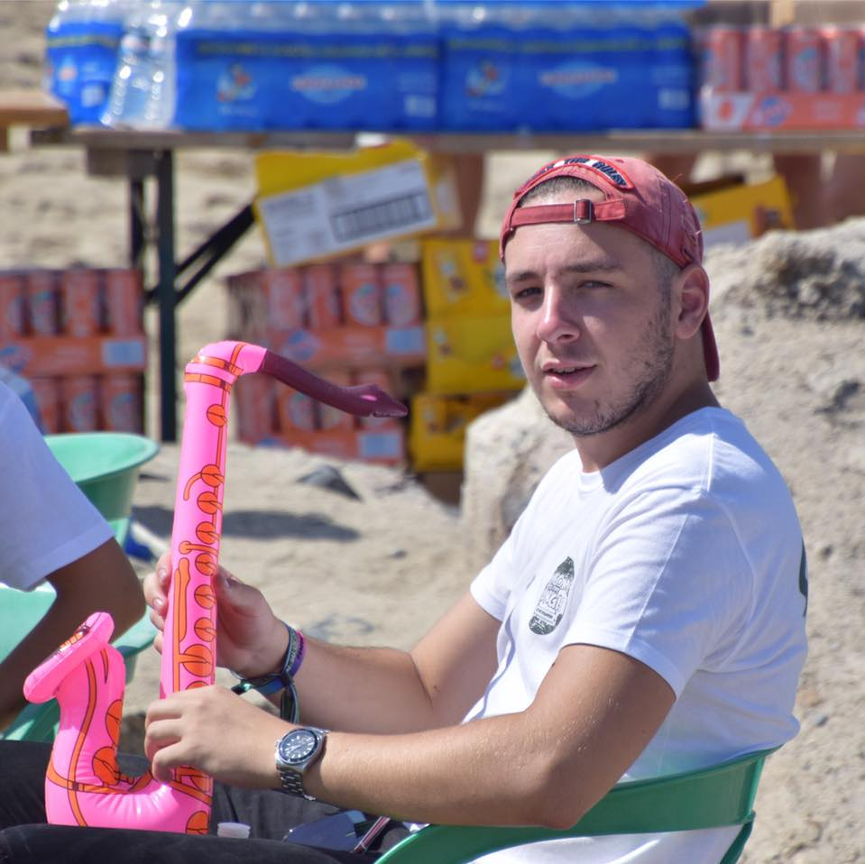
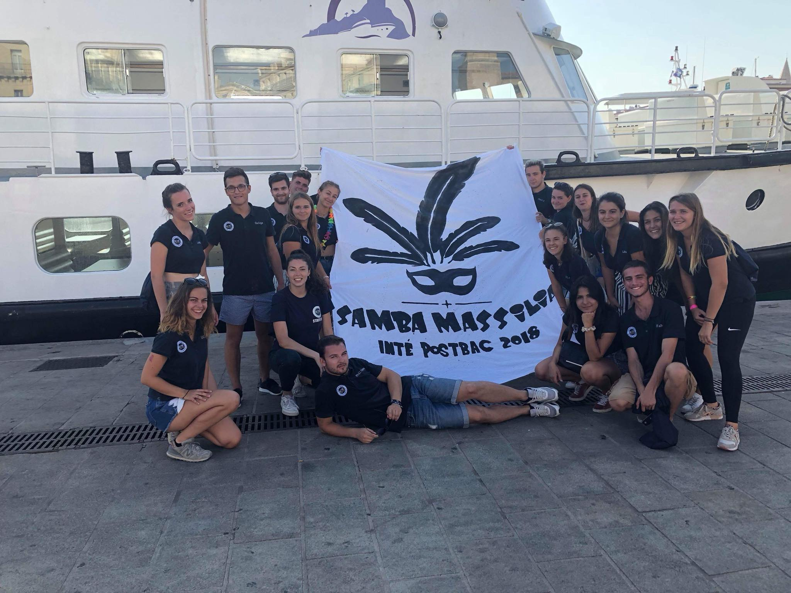

🚀 Salut c'est Paoli 🚀
Du coup je me présente, je suis Antoine Mchanetzki Paoli. J'ai 22 ans et je suis né à Marseille. Je suis en Bachelor à KEDGE. Mes passions dans la vie c'est la musique et le football. Durant mes études à Kedge j'ai eu la chance d'entrer dans le BDE et d'organisé plusieurs évenement dont un avec plus de 1500 étudiants.


🵠Musique ğŸµ
Comme je l'ai dit plus haut, j'adore la musique, j'ai d'ailleur fait 2 ans de guitare. J'aime vraiment tout style de musique, je peux écouter du Jul comme écouter du Linkin Park par la suite.
💙 OLYMPIQUE DE MARSEILLE 🤍
J'aime l'om plus que mon père
🔵 Mon année au BDE ⚪️
Un an dans cette association, au poste de trésorier. J'ai eu la chance d'organiser deux week-ends d'intégration, un pour les post-bacs (500 personnes à peu près) et un pour les PGE (+1500 étudiants) et une dizaine de soirée.
